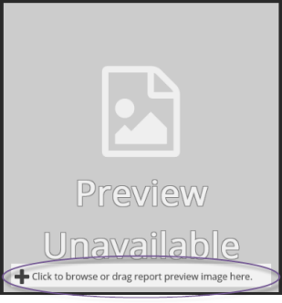

Click a summary based report, such as the Discovery Summary Report.
Place the mouse pointer anywhere on the Preview window to display the trash can icon in the upper-right corner.
Click . A prompt appears stating that clicking OK removes the current image.
Click OK to remove the current image. The Preview Unavailable window appears.
|
|
Note: To restore the default preview image, place the mouse pointer anywhere on the Preview Unavailable window to display the Undo icon in the upper-right corner. |

In the bottom of the Preview Unavailable window, click to open the Microsoft Explorer and navigate to the image.

Do one of the following:
-
Select the image and click Open. The Explorer window closes and the selected image appears in the Preview window.
-
Point, click, and drag the desired image directly into the Preview window.